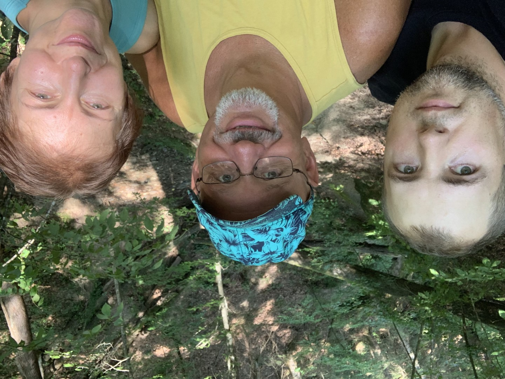
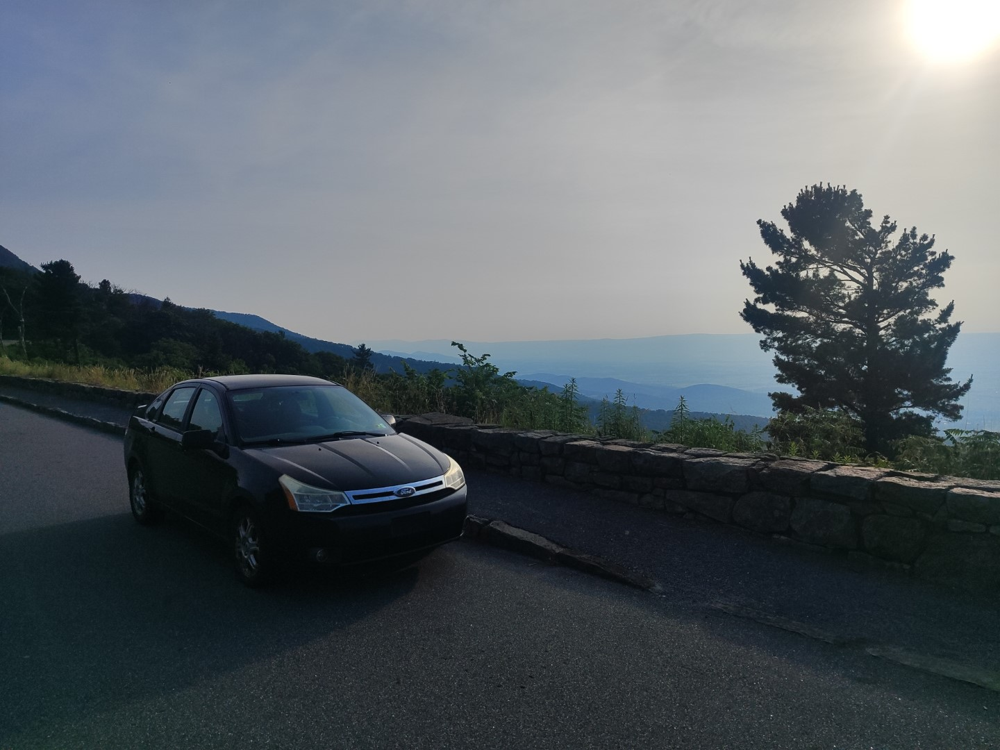

Oleksandr “Sasha” Smirnov — Our Son

July 23, 2026
Oleksandr “Sasha” Smirnov was cremated today from 5:30 to 8:30 a.m. in Teays Valley, West Virginia. He was killed in what authorities are calling a timber accident last Friday at approximately 8:30 a.m. in Fayette County, West Virginia.
This is very difficult for both Vicki and me. When my parents passed, each was ready to go, and final goodbyes had been said. This was different. The suddenness of it hits very hard. I dried his laundry before leaving for work, and his mother, Vicki, heard him as he left that morning. Then he was gone. The week that followed has been one of deep grieving for both of us, especially for her. Born December 24, 1986, he was 39 years old at the time of his passing and just coming into full bloom.
I first met Oleksandr when I traveled to Mykolaiv, Ukraine, to meet Vicki for the first time. He would have been about 24 years old. He was quiet and reserved. He liked electronics, but like many young men growing up in the shadow of the former Soviet Union, there seemed to be few prospects for building a better future. I liked him immediately. He was helpful, thoughtful, and reserved in a way that was immediately apparent. He and his mother shared an apartment in Mykolaiv on the third or fourth floor of an apartment building.
But I only really came to know Sasha after he came to live with us in the United States. How he got here is, in many ways, a miracle in itself and is worth preserving here. His journey to America really began in the most unlikely of ways: a West Virginia blizzard that prevented us from driving to Pittsburgh for Vicki's appointment to complete paperwork for becoming a United States citizen.
Vicki, Sasha, and his younger sister, Alice, were all born in Chernihiv, Ukraine, where Vicki's mother and father had an apartment. Vicki's mother had already passed away, but her father had only recently died, and Vicki needed to travel there to claim the apartment, arrange for his gravestone, and take care of other family matters. This delayed her departure by several months.
That delay proved significant. It allowed Sasha, who was working in ship maintenance on a six-month contract in Equatorial Guinea for a company from Lithuania, to return to Ukraine for his six months off contract. As a result, he and his mother were together in the apartment at the same time.
The conflict that would eventually engulf Ukraine traces back to the events surrounding the February 2014 Maidan uprising. One can debate the geopolitics that followed, but that is not the purpose of this story. On February 22, 2022, Vicki and Sasha were in Mykolaiv when bombs struck targets in the shipyards. Vicki already had a plane ticket to depart two days later from Kherson Airport, just south of Mykolaiv. But after the bombing began, waiting was no longer an option. That morning she told Sasha to gather his things because they were leaving Ukraine by bus through Moldova.
There was one problem. Sasha had submitted his passport to the agency handling his application to return to work in Equatorial Guinea, and the office was closed. Fortunately, he had the home telephone number of the woman who worked there and called her. She told him she would contact the security guard, who would retrieve his passport from the safe. She did exactly that, and the security guard gave him his passport.
Together they bought bus tickets to Chișinău that would take them through Odesa, where they would have to change buses. They arrived in Odesa, but their connecting bus never came, and there were no more tickets available. Vicki then noticed two buses preparing to leave. She asked one of the drivers if they were full. He said they were not, but that he could not let them board without tickets. It must have been the look of desperation on Vicki's face, because he changed his mind and allowed both of them to board anyway.
As they approached the Moldova border, there were two routes to customs. The main route was jammed with a very long line of vehicles waiting to cross. The bus driver made a decision that, in hindsight, helped Sasha eventually reach the United States. He took a detour to the lesser-used crossing. Even there they were greeted by a line stretching nearly two kilometers, but it was far shorter than the wait at the main crossing would have been.
It was after they had both cleared Ukrainian customs, but before entering Moldova, that Sasha received word on his phone that Ukraine was closing its borders to military-age men leaving the country. Sasha had crossed out of Ukraine by only about 30 minutes.
I have little doubt that had he not made it out in time, given his age and athletic ability, he would have been conscripted into the infantry and likely counted among the hundreds of thousands, and perhaps eventually the more than one million, Ukrainian dead and wounded during the war.
Their journey continued, but that was the most intense part of their escape. In Chișinău, a man approached them and asked if they needed help. Vicki said yes. He took them to his home, where he and his wife gave them food, a shower, and a place to sleep in their spare bedroom. The next morning, the kind couple prepared breakfast, went to the store to buy them food for the trip, and purchased bus tickets for both of them to Bucharest.
In Bucharest they stayed for three days before traveling to Belgrade. While in Belgrade, they learned that Germany was accepting Ukrainian refugees, so they purchased tickets and flew to Munich. In Munich, German authorities explained that the area was already overcrowded and suggested they continue farther west to Cologne.
When they arrived in Cologne, they were met and taken to a building that had once served as the Embassy of Tajikistan. It had since been converted into a temporary living facility, with two communal kitchens and shared bathrooms located at opposite ends of each floor. The German government provided food twice a week. Sometimes there was a little meat. They shared one of the larger former conference rooms.
Vicki remained there for about two months before returning home in late May. Sasha stayed behind while we all tried to determine what he should do next. There was a park nearby, and he and Vicki both loved walking there. After Vicki left, Sasha used Germany's train system to visit many castles. They both came to love the German countryside and its people.
The United States then opened its own program for Ukrainian refugees called Uniting for Ukraine. We applied on Sasha's behalf, and one dark night in Charleston, West Virginia, a weary Sasha walked off the plane and into both of our lives.
ecdf85fe22e5cbb45e5395bb20085656a664aa863c75837857439bcfa5f8ca2c
I had just finished writing the previous section when I received a call telling me that Sasha's remains were ready to be picked up. They are here with me now as I write the second half of this story.
Sasha didn't know much English, nor was he especially motivated to learn it. Perhaps he didn't think he had much chance of staying here, or perhaps he hoped the war would end quickly so he could return to work. Most of the English he did learn came from me and later from his coworkers while working at the South Charleston Golf Course and then with the tree harvesting company where he worked for about a year, the job that ultimately led to his death.
One of the first things we noticed was how good he was at fixing things around the house. He installed LED lights in the basement, put up a new mailbox, replaced light fixtures, repaired the electric dryer, and fixed one of the burners on the stove. But it was when he got his first car that he really began to shine.
A fellow lifeguard was giving her daughter in Boston a newer car and offered to sell us her daughter's current vehicle, a 2009 Ford Focus, for $800. They drove to Boston in their car, while Sasha and I drove the vehicle intended for their daughter. Once we arrived, we purchased the Ford Focus, and I drove it back to Charleston.
After we got home, I taught Sasha how to drive, and he took to it immediately. Then he did something none of us expected. He practically rebuilt the entire car. Without a garage, working only in the carport in front of our condominium and with no previous automotive experience, he taught himself. He watched YouTube videos in Russian and then went to work. Before long, nearly everything underneath the chassis had been replaced. He even began working on the engine.

Vicki told me there is a saying in Ukraine for someone like him: "a man with golden hands." It fit him perfectly.
He loved that old Ford Focus. He loved that it was old enough for him to work on and improve. It brought him tremendous satisfaction, and he wanted to become a mechanic. The greatest obstacle was the English language. He would much rather learn something mechanical than study English. Vicki made a tremendous effort to persuade him to spend just fifteen minutes a day learning the language, but he resisted that kind of study. We kept telling him he knew enough English to get a job in a repair shop, and he applied to several, but the call never came.
I came to understand Sasha as someone many people might dismiss at first glance, yet who contained enormous potential and an extraordinary amount of goodwill. He was six feet one inch tall, well built, strong, and handsome, yet incredibly quiet. He never drew attention to himself and never seemed to become angry. He was a man without vices. He was kind, gentle, and deeply loyal, especially to Vicki. He neither smoked, drank, nor used drugs.
Eventually, I came to think of him as the son I never had.
After his passing, I mentioned to Vicki that I had been looking forward to one day leaving him this house. She quietly replied that she had been thinking the very same thing.
Over the years, an older man comes to know many kinds of people. Sasha was one of the finest human beings I have ever met, if not the finest.
Over time our communication improved. Apparently my Nebraskan accent is slow enough for the foreign ear, and he could understand my English with little difficulty. I assumed he could understand everyone that well, but Vicki assured me that it was mostly me that he could follow so easily. He was shy about making new friends and confided to Vicki that this was one of the hardest parts of living in the United States.
A couple of years ago, Sasha and I took a short trip to Mammoth Cave in Kentucky. I still have a few small mementos from that vacation. He and Vicki also loved visiting local parks and the New River Gorge area to hunt for mushrooms together.
The program Sasha was in, Uniting for Ukraine, was scheduled to conclude in December 2026, and he had just reapplied. This was a source of concern for all of us. If the program ended, or if men his age were no longer eligible, what would happen next? We even discussed the possibility of Canada, but decided to wait until we learned more, which was expected sometime in August 2026.
I believe this uncertainty was one of the reasons Sasha remained with the tree harvesting company. The pay was better than most work available in Charleston, and he was saving his money for whatever might come next. Yet there were indications that all was not well. In the second half of June 2026, Sasha told Vicki, "Now we have less people, and it's harder to work. Now we have to work with a smaller amount of people." Then, three days before his passing, he told Vicki that "his job was dangerous." She now tearfully regrets not realizing just how serious his concerns were.
In late June and early July of 2026, Sasha and Vicki took a trip to Luray Caverns near Shenandoah National Park. They spent a great deal of time together, and looking back on those days, Vicki told me she felt like a rich woman.
Then, on Saturday, July 11, 2026, Vicki was not feeling well, and it was an especially hot day. Sasha and I drove to the swimming area at Beech Fork Lake in Wayne County, West Virginia, about a seventy-five-minute drive each way.
What surprised me was that during the drive there, while we were at the beach, and almost all the way home, Sasha and I talked naturally, man to man, back and forth. It was unlike any conversation we had shared before. About ten miles outside Charleston, I said something like, "I'm really proud of your English. You have come a long way. Maybe it's time for another job.
He chuckled and simply replied, "No, not yet."
Vicki believes his soul somehow knew that his time was growing short. She points to the gentleness he showed her during their trip to the Shenandoah Valley, the ease with which he talked to me that day at the lake, and something else that happened later that same week. While Vicki was taking one of her evening walks, Sasha called and asked if he could join her. Of course she turned around and came back for him. Together they shared one final walk, about thirty minutes on a beautiful July evening as twilight settled in.
This is the story of a man history could easily have forgotten. I would rather remember him as a representative of all that we lose.
For those who have followed my work, you know that my primary motivation has always been to help end the foolishness we call war. From a very early age, I have viewed aggression as a tragic waste of both resources and human lives. I could always identify with people who suffered and, in some measure, feel their pain. Whether it was the bombing of Gaza or whatever tragedy came next, I understood the loss. Now, because of Sasha, I understand it in a way I never could before.
People are not abstractions.
We must find a way to progress and grow as a civilization that does not require war. There has to be a better way. Every life lost is more than a statistic. It is a family forever changed, a future never realized, and a chance for a better tomorrow taken from us.
People are not abstractions.
Rest in peace, our son, Oleksandr "Sasha" Smirnov.
December 24, 1986 – July 17, 2026
You were the best of men. I am proud to call you my son.
I love you Sasha.
Frank C. Gahl